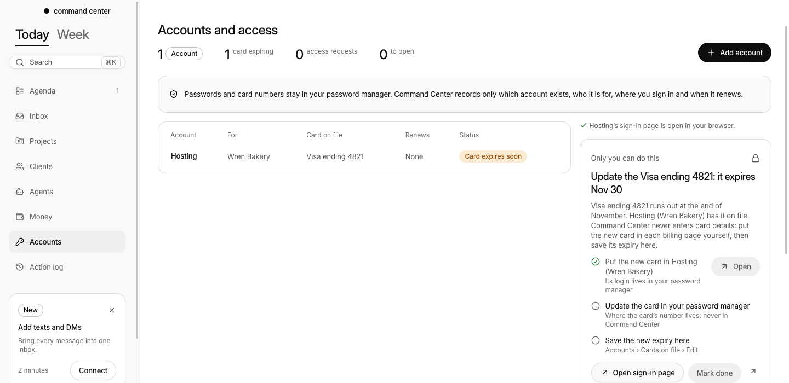

Accounts and cards
Every service you run for a client, which card pays for it and when it renews, in one place. Nothing secret is kept: no passwords, no full card numbers.

What's kept
- An account: the service, its client and project, whose it is (yours or the client's), its sign-in page, the login's name, and which item in your password manager holds the password.
- A card: its name, network, last four digits and expiry month. Words that look like a full card number are refused.
- Renewals: when each account renews and what it costs.
Suggestions come from QuickBooks' recurring expenses, to save typing: add one or dismiss it. A sign-in page opens in your own browser, from the account, never from an address in a message.
What reaches you
| When | What reaches Decide |
|---|---|
| 30 days before a card's expiry month ends | The card, with a checklist of every account it pays for, to update it in each. |
| 7 days before a yearly renewal | The renewal and what it costs, to keep or cancel. |
| An account you need to open | A checklist for setting it up. |
Each reaches you once and leaves when your facts settle it. Entering card details, signing up, renewing, cancelling and paying stay yours.
Asking for access
When you need a client's access to something, mark it and Command Center prepares a message to the contact you named, in Approve, under your Send client messages guardrail. If no one answers, it prepares up to three reminders: after 3 working days, then weekly. Each goes only on your click, only to that contact's address.
On each client
A client's profile shows their accounts, and the new-client checklist's Accounts, access and card confirmed step reflects what's in place.